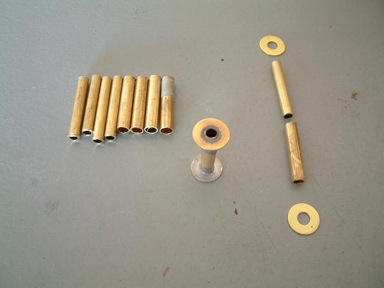
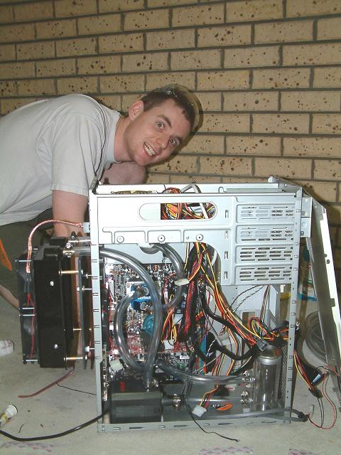

A computer, some power tools, 240 volts, and a couple of litres of water...
|
Update! I've finally uploaded piccies of the second mod we did a few weeks later - find them here! The purpose of this exercise was to increase the cooling ability of my PC. She's a 3.0 gig PIV with a Swiftech MCW5000-T liquid cooled 226 Watt TEC (Peltier), and a Swiftech MCW50-T liquid cooled 80 Watt TEC on the Radeon 9800 Pro graphics card. The stock radiator from my Swiftech Q-Power case just wasn't up to the task, so it was upgraded to a Jaron IceCool. I plumbed the system with 1/2 inch ID Clearflex 60 tubing, purchased as part of a group buy from the OCAU Forums. To maximise the amount of airflow over the radiator, and hence get maximum cooling, I use Panaflo FBA12G12H1A fans, rated at 103.8 CFM @ 41.5 DBA. The pump is an Eheim 1250, 1200 litres per hour job. As I have little to zero skills in the whole "making stuff from other stuff" domain, I managed to convince a mate to "help me" in the fabrication of the needed components. And just to make things interesting, it all had to be done within 24 hours, as there was a big LAN the next day. Miiiiint :) Anyway, here's the piccies. I know some of them didn't turn out so great, but I blame this on the camera. Couldn't possibly be user error. No way. |
|
First up are the engineers of this project. Voool (Michael Woolley) is on the left, I'm (Symon Aked) on the right. |
|
The planning phase. Even though it's a big case, there's norra lorra room in it with all the normal PC guts, plus a TEC PSU, reservoir and pump.
Voool thought up the basic layout (easier to see later on). This was not the last of his good ideas. |
|
The tangled web of cables. The reservoir is still there to test out spacing. Above it is the hole where the hard drive cage goes, and above that is the
Meanwell PSU for the TECs. The Mobo is an Abit IC7-G with a gig of Corsair PC3500 RAM. |
|
The spacers. These are needed to ensure the clearance between the mounting bracket and the radiator is sufficient to allow the fans to draw air in
and over the fins before being exhaused by said fans. The tubing is brass, with the larger diameter pipe being used as a sheath over the smaller
diameter pipe. 2 washers are then soldered to the end, making for a *very* solid structure. Cutting the pipe was a pig, having to use a steel
kitchen knife to slice 'em up. I cut 4 of the lengths on the left, Voool cut the other 4. It is left as an exercise to the reader to figure out who cut what.  |
|
Filing away the dodgy edges. |
|
Flux. Not a capacitor. Stank. |
|
Voool using his r33t soldering skillz. |
|
Voool lining up a bit of MDF to act as the bracket. We were going to use some alumium alloy or acrylic, but the local Bunnings had squat in that
department. Spent about 2 hours looking for all the bits needed for this project, which put a drain on our time and my sanity. Note: The fire
extinguisher in the background is not there by accident. |
|
The Dremel in action. We were going to use a drill, but there's less chance of the acrylic shroud cracking this way. |
|
The freshly cut bracket is secured with the spacers to the shroud of the radiator. |
|
Although my PC is designed for speed and not rice, having bare MDF just wasn't a good look. Here Voool is undercoating the bracket. |
|
And the bracket drying in a tree. A bit low-tech for my liking, but it worked. |
2 * 12cm Panaflow 108CFM fans attached to the shroud, which is attached to the radiator. The 2 brass barbs on the radiator are 1/2 inch ID. 
|
|
Now we're talking Turkey Jerky! The whole assembly weighed a fair amount (1.5kg?), but was very rigid. |
|
Ahhhhh, what fun this part was! Getting the tubing over the bard was a pain, requiring the end of the tubing to be immersed in boiling water for ~15
seconds, then fed over the barb, and repeated ~10 times. Doing this took a lot of effort, and in the end we only used one of em :) Ah well :) |
|
I'm lazy when it comes to doing stuff that I think can be bypassed. Instead of removing my mobo, cards, etc from the case, I decided that the
best/easiest way to avoid metal shavings from the upcoming drilling into the case would be to cover the components with some plastic dropcloth,
held onto the frame by red packing tape. Voool thought this was A Bad Idea. Pffffft! |
|
The completed barrier :) Note the 3 bolts on the LHS, which will be used as standoffs for the bracket that has the radiator attached to it. The
2 large holes next to the bolts were where the original 12cm fans lived, drawing air from outside through the radiator and into the case. This caused
the case to have air up to 12 degrees C hotter than ambient air temperature, which I didn't like, and hence this whole project :) |
|
The Dremel in action again, this time making all the case to bracket standoffs the same (1.5 cm) length. Yes, I am available to take photos for weddings
or any other important occasion. |
Now to see if everything would fit. It was at this point that I thought that my peripheral connectors on the mobo may be obscured, but thankfully one
of us did some subconscious planning, and there was enough clearance for everything. Just. 
|
The original plan called for the top hole to be pop rivited with a piece of metal from an old case. On a spur of the moment call, we went for the duct
tape (red on the inside, black on the outside) instead. Weight saving++! 
|
|
Me with the assembled case, prior to putting the liquid (distilled water with a 30:1 ratio of Redline Water Wetter) in the system. This could have
been the last photo of me to exist had we screwed up somewhere along the line and accidently made a bomb of some sort.
Please note the very rice Molex connector going from the fans on the shroud to the PSU on the back of the case. I was happy with a stock splitter,
but Voool reckoned this looked much better. And he's right (I think the score at this point was Voool 5, Sy 0). What you can't see is the job Voool
did fixing up my dodgy wiring between the PSU, TEC PSU, pump and relay. I now no longer fjeer touching my case when it's on.  |
|
Woot! It worked! No leaks, acrid stenches of blown graphics cards or explosions. It's not very neat inside, but at this point it was 22:45, and I
was too knackered to fuss about it much :)
The liquid goes in from the bottom of the WaterCool reservoir with 1/2 inch barbs, through the Eheim 1250 pump, out to the top-left barb of the radiator,
through the channels of the radiator, out the top-right barb, down to the bottom of the Swiftech MCW5000-PT waterblock, out the top to the
Swiftech MCW50-T waterblock, and then to the top barb of the reservior. The system drank around 1.75 litres of coolant, which
adds to it's already considerable weight, bringing it to 27 (!) Kilos. Carting this thing around to LANs is gonna be *fun*! :) |
|
And the same piccy, but this time with the air flow. Blue is cold air, red is hot air. The side panel also has a 12cm
fan on her, blowing directly on to the pump and mobo. |
|
Well that's it! A f'humongous thanks to Voool, coz I would have screwed up something within the first 5 minutes if I'd have attempted this meself :) He also
came up with the "why route hot air through the case?" question that sparked all of this modding. Thanks also to T-Man for making my *very* dodgy HTML a lot more readable :) Update! I've finally uploaded piccies of the second mod we did a few weeks later - find them here! If you've got any questions about this page, lemme know |